Docker入门
Docker概述
传统虚拟机技术
虚拟机（virtual machine）就是带环境安装的一种解决方案。
它可以在一种操作系统里面运行另一种操作系统，比如在Windows10系统里面运行Linux系统CentOS7。应用程序对此毫无感知，因为虚拟机看上去跟真实系统一模一样，而对于底层系统来说，虚拟机就是一个普通文件，不需要了就删掉，对其他部分毫无影响。这类虚拟机完美的运行了另一套系统，能够使应用程序，操作系统和硬件三者之间的逻辑不变。
| Win 10 | WMWare | Centos7 | 各种cup、内存网络额配置+各种软件 | 虚拟机实例 |
|---|
传统虚拟机技术基于安装在主操作系统上的虚拟机管理系统（如：VirtualBox 和 VMWare 等)，创建虚拟机（虚拟出各种硬件），在虚拟机上安装从操作系统，在从操作系统中安装部署各种应用。
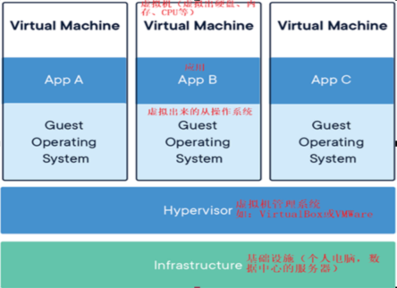
虚拟机的缺点：
- 资源占用多
- 冗余步骤多
- 启动慢
容器虚拟化技术
由于前面虚拟机存在某些缺点，Linux 发展出了另一种虚拟化技术：
Linux 容器(Linux Containers，缩写为 LXC)
Linux 容器是与系统其他部分隔离开的一系列进程，从另一个镜像运行，并由该镜像提供支持进程所需的全部文件。容器提供的镜像包含了应用的所有依赖项，因而在从开发到测试再到生产的整个过程中，它都具有可移植性和一致性。
Linux 容器不是模拟一个完整的操作系统而是对进程进行隔离。有了容器，就可以将软件运行所需的所有资源打包到一个隔离的容器中。容器与虚拟机不同，不需要捆绑一整套操作系统，只需要软件工作所需的库资源和设置。系统因此而变得高效轻量并保证部署在任何环境中的软件都能始终如一地运行。
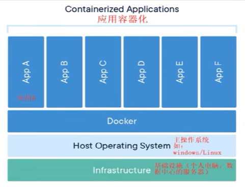
Docker 容器是在操作系统层面上实现虚拟化，直接复用本地主机的操作系统，而传统
虚拟机则是在硬件层面实现虚拟化。与传统的虚拟机相比，Docker 优势体现为启动速
度快、占用体积小。
对比
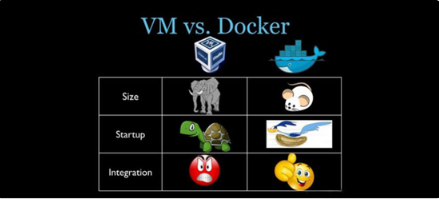
比较了 Docker 和传统虚拟化方式的不同之处：
- 传统虚拟机技术是虚拟出一套硬件后，在其上运行一个完整操作系统，在该系统上再运行所需应用进程；
- 容器内的应用进程直接运行于宿主的内核，容器内没有自己的内核且也没有进行硬件虚拟。因此容器要比传统虚拟机更为轻便。
- 每个容器之间互相隔离，每个容器有自己的文件系统 ，容器之间进程不会相互影响，能区分计算资源。
Docker工作原理
Docker 是一个 C/S 模式的架构，后端是一个松耦合架构，众多模块各司其职。
Docker 运行的基本流程为：
- 用户是使用 Docker Client 与 Docker Daemon 建立通信，并发送请求给后者。
- Docker Daemon 作为 Docker 架构中的主体部分，首先提供 Docker Server 的功能使其可以接受 Docker Client 的请求。
- Docker Engine 执行 Docker 内部的一系列工作，每一项工作都是以一个 Job 的式的存在。
- Job 的运行过程中，当需要容器镜像时，则从 Docker Registry 中下载镜像，并通过镜像管理驱动 Graph driver 将下载镜像以 Graph的形式存储。
- 当需要为 Docker 创建网格环境时，通过网格管理驱动 Network driver 创建并配直 Docker 容器网铬环境。
- 当需要限制 Docker 容器运行资源或执行用户指令等操作时，则通过 Exec driver 来完成。
- Libcontainer 是一项独立的容器管理包，Network driver 以及 Exec driver 都是通过 Libcontainer 来实现具体对容器进行的操作。
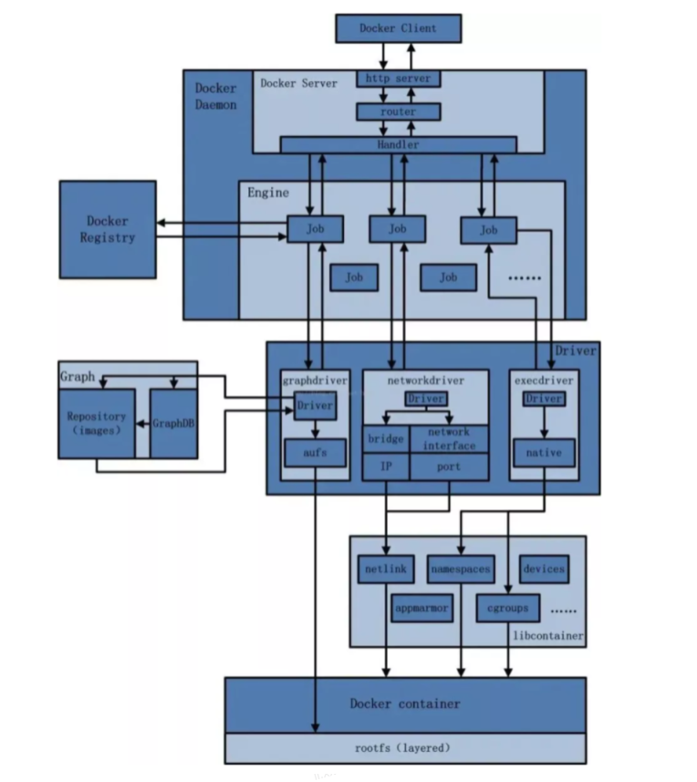
底层原理
为什么 Docker 会比 VM 虚拟机快
-
Docker 有着比虚拟机更少的抽象层
由于 Docker 不需要 Hypervisor(虚拟机)实现硬件资源虚拟化,运行在 Docker 容器上的程序直接使用的都是实际物理机的硬件资源。因此在 CPU、内存利用率上 Docker 将会在效率上有明显优势。
-
Docker 利用的是宿主机的内核,而不需要加载操作系统 OS 内核
当新建一个容器时, Docker 不需要和虚拟机一样重新加载一个操作系统内核。进而避免引寻、加载操作系统内核返回等比较费时费资源的过程,当新建一个虚拟机时,虚拟机软件需要加载 OS,返回新建过程是分钟级别的。而 Docker 由于直接利用宿主机的操作系统,则省略了返回过程,因此新建一个 Docker 容器只需要几秒钟。
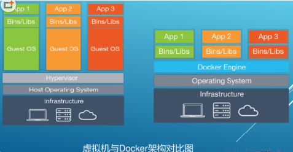
| Docker 容器 | 虚拟机 (VM) | |
|---|---|---|
| 操作系统 | 与宿主机共享 OS | 宿主机 OS 上运行虚拟机 OS |
| 存储大小 | 镜像小，便于存储与传输 | 镜像庞大（vmdk、vdi 等） |
| 运行性能 | 几乎无额外性能损失 | 操作系统额外的 CPU、内存消耗 |
| 移植性 | 轻便、灵活，适应于 Linux | 笨重，与虚拟化技术耦合度高 |
| 硬件亲和性 | 面向软件开发者 | 面向硬件运维者 |
| 部署速度 | 快速、秒级 | 较慢，10s 以上 |
Docker安装
安装步骤
Ubuntu
- 卸载原有的
for pkg in docker.io docker-doc docker-compose docker-compose-v2 podman-docker containerd runc; do sudo apt-get remove $pkg; done- 设置镜像源（与官网有异）
# Add Docker's official GPG key:
sudo apt-get update
sudo apt-get install ca-certificates curl
sudo install -m 0755 -d /etc/apt/keyrings
## 不要使用官方的镜像地址
sudo curl -fsSL http://mirrors.aliyun.com/docker-ce/linux/ubuntu/gpg -o /etc/apt/keyrings/docker.asc
sudo chmod a+r /etc/apt/keyrings/docker.asc
# Add the repository to Apt sources: !!用阿里云地址
echo \
"deb [arch=$(dpkg --print-architecture) signed-by=/etc/apt/keyrings/docker.asc] http://mirrors.aliyun.com/docker-ce/linux/ubuntu \
$(. /etc/os-release && echo "$VERSION_CODENAME") stable" | \
sudo tee /etc/apt/sources.list.d/docker.list > /dev/null
sudo apt-get update- 安装引擎
sudo apt-get install docker-ce docker-ce-cli containerd.io docker-buildx-plugin docker-compose-plugin- 版本及校验
sudo docker version
sudo docker run hello-world- 卸载
sudo systemctl stop docker
sudo apt-get purge docker-ce docker-ce-cli containerd.io docker-buildx-plugin docker-compose-plugin docker-ce-rootless-extras
sudo rm -rf /var/lib/docker
sudo rm -rf /var/lib/containerdCentOS7
- 卸载原有的
sudo yum remove docker \
docker-client \
docker-client-latest \
docker-common \
docker-latest \
docker-latest-logrotate \
docker-logrotate \
docker-engine- 设置镜像源(使用阿里云)
sudo yum install -y yum-utils
sudo yum-config-manager --add-repo http://mirrors.aliyun.com/docker-ce/linux/centos/docker-ce.repo- 安装引擎
sudo yum install -y docker-ce docker-ce-cli containerd.io docker-buildx-plugin docker-compose-plugin- 启动
sudo systemctl start docker- 版本与校验
docker --version
docker run hello-world- 卸载
sudo yum remove docker-ce docker-ce-cli containerd.io docker-buildx-plugin docker-compose-plugin docker-ce-rootless-extras
sudo rm -rf /var/lib/docker
sudo rm -rf /var/lib/containerd阿里云镜像加速
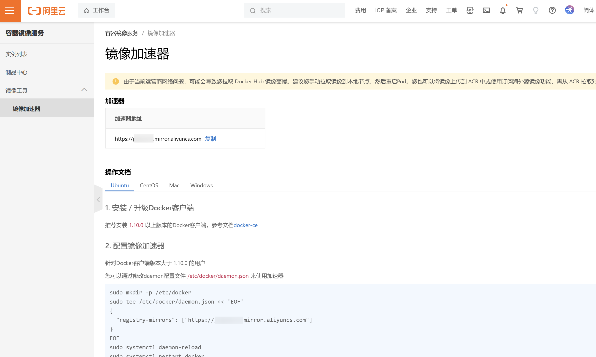
Docker常用命令
帮助启动类命令
sudo systemctl start docker #启动
sudo systemctl stop docker #停止
sudo systemctl restart docker #重启
sudo systemctl status docker #状态
sudo systemctl enable docker #开机自启
sudo systemctl docker info #查看docker概要信息
sudo systemctl docker --help #总体帮助
sudo systemctl 具体命令 --htlp #具体命令帮助镜像命令
docker images
REPOSITORY TAG IMAGE ID CREATED SIZE
hello-world latest ee301c921b8a 10 months ago 9.14kB| 参数 | 说明 |
|---|---|
| REPOSITORY | 表示镜像的仓库源 |
| TAG | 镜像的标签版本号 |
| IMAGE ID | 镜像ID |
| CREATED | 镜像创建时间 |
| SIZE | 镜像大小 |
同一仓库源可以有多个 TAG版本，代表这个仓库源的不同个版本，我们使用 REPOSITORY:TAG 来定义不同的镜像。
如果你不指定一个镜像的版本标签，例如你只使用 ubuntu，docker 将默认使用 ubuntu:latest 镜像OPTIONS说明：
-a :列出本地所有的镜像（含历史映像层）
-q :只显示镜像ID。
docker search 某个XXX镜像名字
NAME DESCRIPTION STARS OFFICIAL
redis Redis is an open source key-value store that… 12678 [OK]
redislabs/redisinsight RedisInsight - The GUI for Redis 97
redislabs/redisearch Redis With the RedisSearch module pre-loaded… 62
redis/redis-stack-server redis-stack-server installs a Redis server w… 68
redis/redis-stack redis-stack installs a Redis server with add… 99
.......| 参数 | 说明 |
|---|---|
| NAME | 镜像名称 |
| DESCRIPTION | 镜像说明 |
| STARS | 点赞数量 |
| OFFICIAL | 是否是官方的 |
#举例
docker search --limit 5 redis #罗列5条docker pull 某个XXX镜像名字
docker pull 镜像名字[:TAG]
# 没有TAG就是最新, 等价于 docker pull 镜像名字:latest
#举例
docker pull ubuntudocker system df
查看镜像/容器/数据卷所占的空间
TYPE TOTAL ACTIVE SIZE RECLAIMABLE
Images 2 1 65.6MB 65.59MB (99%)
Containers 2 0 0B 0B
Local Volumes 0 0 0B 0B
Build Cache 0 0 0B 0Bdocker rmi 某个XXX镜像名字/ID
#举例
docker rmi -f ee301c921b8a
#删除多个
docker rmi -f ee301c921b8a ee301c921b8a
#删除全部
docker rmi -f $(docker images -qa)面试题：谈谈 docker 虚悬镜像是什么?
是什么?
仓库名、标签都是 <none> 的镜像，俗称虚悬镜像dangling image
长什么样?
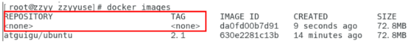
容器命令
新建+启动容器
docker run [OPTIONS] IMAGES [COMMAND] [ARG...]OPTIONS说明
| OPTIONS | 说明 |
|---|---|
| –name=“新容器名字” | 为容器指定一个名字 |
| -d | 后台运行容器并返回容器 ID，也即启动守护式容器(后台运行) |
| -i | 以交互模式运行容器，通常与 -t 同时使用 |
| -t | 为容器重新分配一个伪输入终端，通常与 -i 同时使用; 也即启动交互式容器(前台有伪终端，等待交互) |
| -P | 随机端口映射，大写 P |
| -p | 指定端口映射，小写 p |
| 举例 | 说明 |
|---|---|
| -p hostPort:containerPort | 端口映射 -p |
| -p ip:hostPort:containerPort | 配置监听地址 -p 10.0.0.100:8080:80 |
| -p ip::containerPort | 随机分配端口 -p 10.0.0.100::80 |
| -p hostPort:containerPort:udp | 指定协议 -p 8080:80:tcp |
| -p 81:80 -p 443:443 | 指定多个 |
启动交互式容器(前台命令行)
docker run -it ubuntu /bin/bash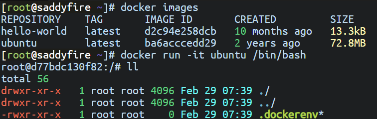
参数说明
| 参数 | 说明 |
|---|---|
| -i | 交互式操作 |
| -t | 终端 |
| centos | centos |
| /bin/bash | 放在镜像名后面的是命令, 这里我们希望有个交互式 Shell, 因此使用的是 /bin/bash; 要退出终端, 直接输入 exit |
列出当前所有正在运行的容器
docker ps [OPTIONS]OPTIONS 说明
| OPTIONS | 说明 |
|---|---|
| -a | 列出当前所有正在运行的容器 + 历史上运行过的 |
| -l | 显示最近创建的容器 |
| -n | 显示最近 n 个创建的容器 |
| -q | 静默模式, 只显示容器编号 |
退出容器
exit #run进去容器, exit退出, 容器停止
ctrl + p + q #run进去容器, ctrl+p+q退出, 容器不停止启动已停止运行的容器
docker start 容器ID或者容器名重启容器
docker restart 容器ID或者容器名停止容器
docker stop 容器ID或者容器名强制停止容器
docker kill 容器ID或容器名删除已停止的容器
docker rm 容器ID一次性删除多个容器
docker rm -f $(docker ps -a -q)
docker ps -a -q|xargs docker rm重要👍
-
有镜像才能创建容器，这是根本前提(下载一个Redis6.0.8镜像演示)
-
启动守护式容器(后台服务器)
在大部分的场景下，我们希望 docker 的服务是在后台运行的， 我们可以过 -d 指定容器的后台运行模式。
docker run -d 容器名 #使用镜像centos:latest以后台模式启动一个容器 docker run -d redis:6.0.8 -
查看容器日志
docker logs 容器ID -
查看容器内运行的进程
docker top 容器ID -
查看容器内部细节
docker inspect 容器ID -
进入正在运行的容器并以命令行交互👍
docker exec -it 容器ID bashShell #举例 docker exec -it 30c6aa783b4b /bin/bash docker attach 容器ID #生产中不要使用 #举例 docker attach 30c6aa783b4b #区别: 使用attach后再用exit退出会关闭容器 -
从容器内拷贝文件到主机上
docker cp 容器ID:容器内路径 目的主机路径 #举例 docker cp ff4b9748d952:/data/1.txt ./ -
导入和导出容器👍
export 导出容器的内容留作为一个tar归档文件[对应import命令] import 从tar包中的内容创建一个新的文件系统再导入为镜像[对应export] #举例 docker export 30c6aa783b4b > abcd.tar cat abcd.tar | docker import - dee/ubuntu:3.7
小总结
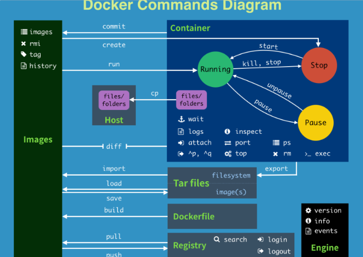
attach Attach to a running container # 当前 shell 下 attach 连接指定运行镜像
build Build an image from a Dockerfile # 通过 Dockerfile 定制镜像
commit Create a new image from a container changes # 提交当前容器为新的镜像
cp Copy files/folders from the containers filesystem to the host path #从容器中拷贝指定文件或者目录到宿主机中
create Create a new container # 创建一个新的容器，同 run，但不启动容器
diff Inspect changes on a container's filesystem # 查看 docker 容器变化
events Get real time events from the server # 从 docker 服务获取容器实时事件
exec Run a command in an existing container # 在已存在的容器上运行命令
export Stream the contents of a container as a tar archive # 导出容器的内容流作为一个 tar 归档文件[对应 import ]
history Show the history of an image # 展示一个镜像形成历史
images List images # 列出系统当前镜像
import Create a new filesystem image from the contents of a tarball # 从tar包中的内容创建一个新的文件系统映像[对应export]
info Display system-wide information # 显示系统相关信息
inspect Return low-level information on a container # 查看容器详细信息
kill Kill a running container # kill 指定 docker 容器
load Load an image from a tar archive # 从一个 tar 包中加载一个镜像[对应 save]
login Register or Login to the docker registry server # 注册或者登陆一个 docker 源服务器
logout Log out from a Docker registry server # 从当前 Docker registry 退出
logs Fetch the logs of a container # 输出当前容器日志信息
port Lookup the public-facing port which is NAT-ed to PRIVATE_PORT # 查看映射端口对应的容器内部源端口
pause Pause all processes within a container # 暂停容器
ps List containers # 列出容器列表
pull Pull an image or a repository from the docker registry server # 从docker镜像源服务器拉取指定镜像或者库镜像
push Push an image or a repository to the docker registry server # 推送指定镜像或者库镜像至docker源服务器
restart Restart a running container # 重启运行的容器
rm Remove one or more containers # 移除一个或者多个容器
rmi Remove one or more images # 移除一个或多个镜像[无容器使用该镜像才可删除，否则需删除相关容器才可继续或 -f 强制删除]
run Run a command in a new container # 创建一个新的容器并运行一个命令
save Save an image to a tar archive # 保存一个镜像为一个 tar 包[对应 load]
search Search for an image on the Docker Hub # 在 docker hub 中搜索镜像
start Start a stopped containers # 启动容器
stop Stop a running containers # 停止容器
tag Tag an image into a repository # 给源中镜像打标签
top Lookup the running processes of a container # 查看容器中运行的进程信息
unpause Unpause a paused container # 取消暂停容器
version Show the docker version information # 查看 docker 版本号
wait Block until a container stops, then print its exit code # 截取容器停止时的退出状态值Docker镜像
概念
概述
Docker 镜像是一种轻量级、可执行的独立软件包，它包含运行某个软件所需的所有内容，我们把应用程序和配置依赖打包好形成一个可交付的运行环境(包括代码、运行时需要的库、环境变量和配置文件等)，这个打包好的运行环境就是 image 镜像文件。
只有通过这个镜像文件才能生成 Docker 容器实例（类似 Java 中 new 出来一个对象）。
UnionFS（联合文件系统）
UnionFS（联合文件系统）：Union文件系统（UnionFS）是一种分层、轻量级并且高性能的文件系统，它支持对文件系统的修改作为一次提交来一层层的叠加，同时可以将不同目录挂载到同一个虚拟文件系统下(unite several directories into a single virtual filesystem)。Union 文件系统是 Docker 镜像的基础。镜像可以通过分层来进行继承，基于基础镜像（没有父镜像），可以制作各种具体的应用镜像。
特性：一次同时加载多个文件系统，但从外面看起来，只能看到一个文件系统，联合加载会把各层文件系统叠加起来，这样最终的文件系统会包含所有底层的文件和目录
Docker镜像加载原理
docker的镜像实际上由一层一层的文件系统组成，这种层级的文件系统UnionFS。
bootfs(boot file system) 主要包含 bootloader 和 kernel, bootloader 主要是引导加载 kernel, Linux 刚启动时会加载 bootfs 文件系统，在 Docker 镜像的最底层是引导文件系统 bootfs。这一层与我们典型的 Linux/Unix 系统是一样的，包含 boot 加载器和内核。当 boot 加载完成之后整个内核就都在内存中了，此时内存的使用权已由 bootfs 转交给内核，此时系统也会卸载 bootfs。
rootfs (root file system) ，在 bootfs 之上。包含的就是典型 Linux 系统中的 /dev, /proc, /bin, /etc 等标准目录和文件。rootfs 就是各种不同的操作系统发行版，比如 Ubuntu，CentOS 等等。
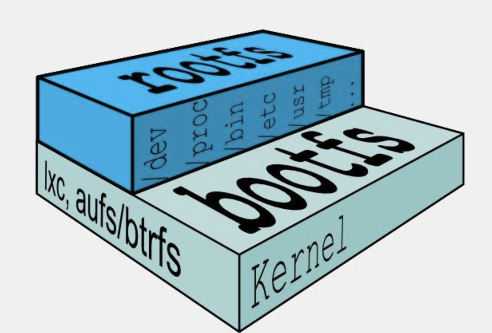
平时我们安装进虚拟机的CentOS都是好几个G，为什么docker这里才200M？？
对于一个精简的 OS，rootfs 可以很小，只需要包括最基本的命令、工具和程序库就可以了，因为底层直接用 Host 的 kernel，自己只需要提供 rootfs 就行了。由此可见对于不同的 linux 发行版, bootfs 基本是一致的, rootfs 会有差别, 因此不同的发行版可以公用 bootfs。
为什么 Docker 镜像要采用这种分层结构呢
镜像分层最大的一个好处就是共享资源，方便复制迁移，就是为了复用。
比如说有多个镜像都从相同的 base 镜像构建而来，那么 Docker Host 只需在磁盘上保存一份 base 镜像；
同时内存中也只需加载一份 base 镜像，就可以为所有容器服务了。而且镜像的每一层都可以被共享。
重点理解
Docker镜像层都是只读的，容器层是可写的。当容器启动时，一个新的可写层被加载到镜像的顶部。 这一层通常被称作“容器层”，“容器层”之下的都叫“镜像层”。
所有对容器的改动 - 无论添加、删除、还是修改文件都只会发生在容器层中。只有容器层是可写的，容器层下面的所有镜像层都是只读的。
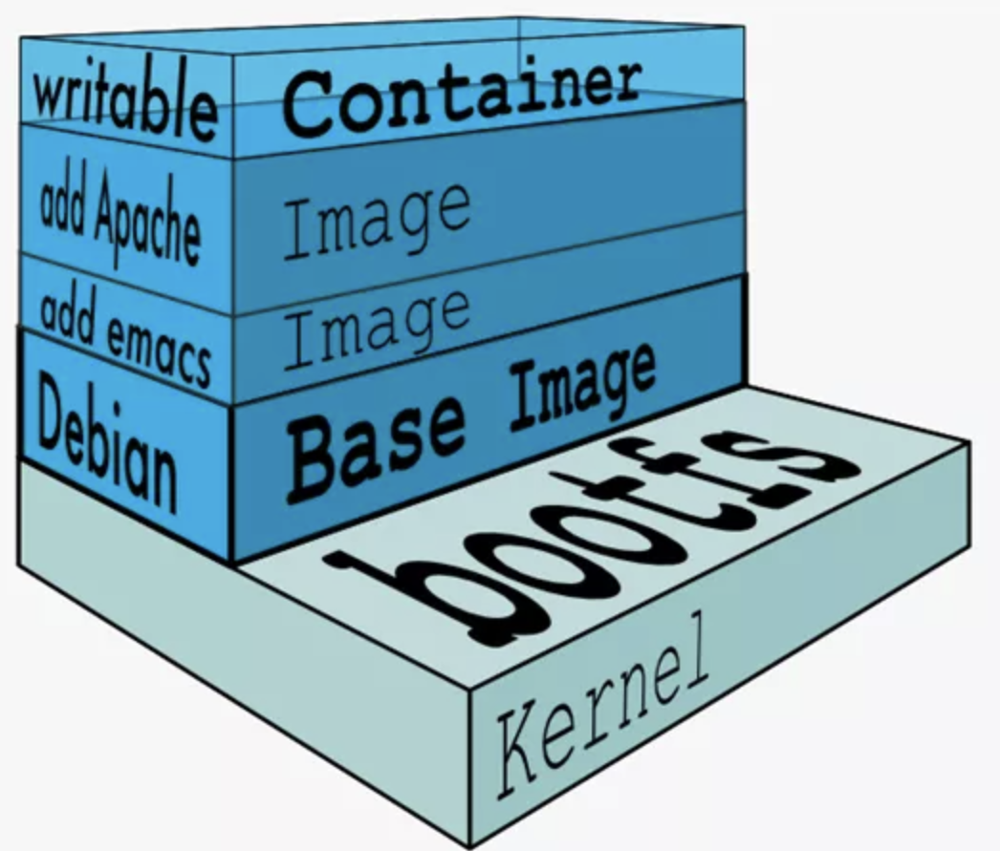
Docker镜像commit
#docker commit 提交容器副本使之成为一个新的镜像
docker commit [OPTIONS] 容器ID [REPOSITORY[:TAG]]
docker commit -m="提交的描述信息" -a="作者" 容器ID 要创建的目标镜像名:[标签名]| OPTIONS | 说明 |
|---|---|
| -a | 提交的镜像作者 |
| -m | 提交时的说明文字 |
举例
# 1.从Hub上下载Ubuntu镜像到本地并成功运行
# 2.外网连通的情况下, 安装
apt update
apt install -y vim
# 3.安装完成后, commit 新的镜像
docker commit -a="dee" -m="add vim" 6fb85ed2da66 dee/dubuntu:1.1
# 4.查看刚才制作的镜像
docker images总结
Docker 中的镜像分层，支持通过扩展现有镜像，创建新的镜像。类似 Java 继承于一个 Base 基础类，自己再按需扩展。
新镜像是从 base 镜像一层一层叠加生成的。每安装一个软件，就在现有镜像的基础上增加一层
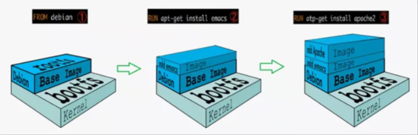
本地镜像发布到阿里云
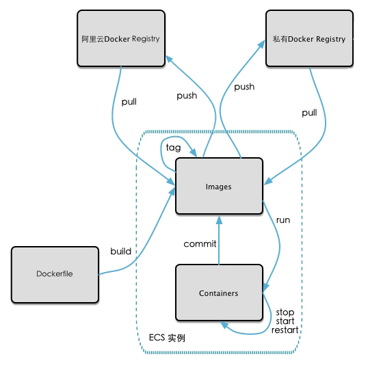
推送流程
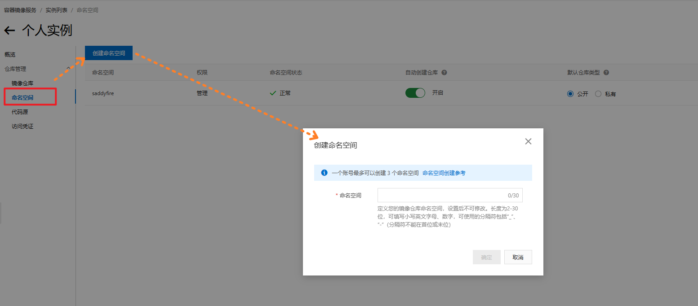
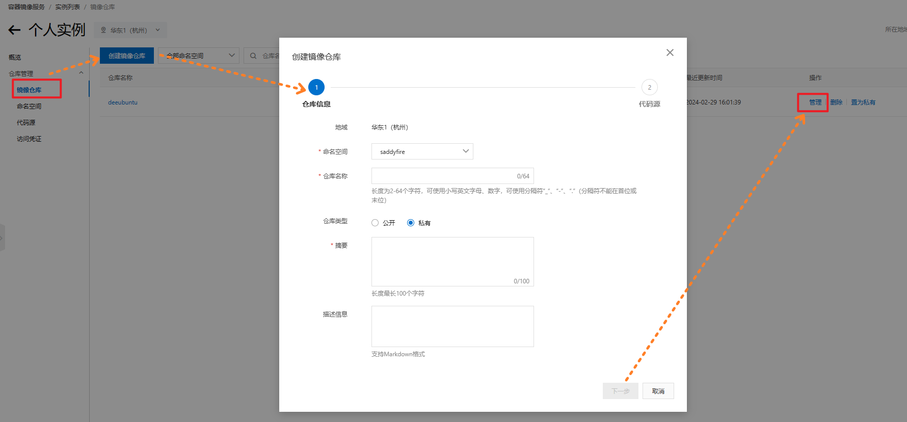
进入管理界面获得脚本
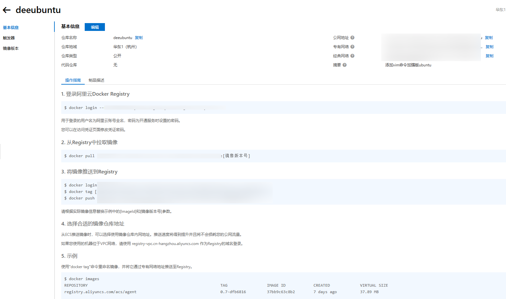
将镜像推送到Registry
#示例
docker tag f41bfd155605 registry.cn-hangzhou.aliyuncs.com/saddyfire/deeubuntu:1.1
docker push registry.cn-hangzhou.aliyuncs.com/saddyfire/deeubuntu:1.1从Registry中拉取镜像
docker pull registry.cn-hangzhou.aliyuncs.com/saddyfire/deeubuntu:1.1本地镜像发布到私有库
-
下载镜像Docker Registry
docker pull registry -
运行私有库Registry，相当于本地有个私有Docker hub
docker run -d -p 5000:5000 -v /ddocker/myregistry/:/tmp/registry --privileged=true registry
示例
# 1.运行一个Ubuntu容器, 下载ifconfig
apt update
apt install -y net-tools
# 2.commit新镜像
docker commit -a="dee" -m="add ifconfig" 6fb85ed2da66 dee/dubuntu:1.5
# 3.curl验证私服库上有什么镜像
curl -XGET 192.168.1.111:5000/v2/_catalog
# 4.将新镜像dee/dubuntu:1.5修改成符合私服规范的Tag
docker tag dee/dubuntu:1.5 192.168.1.111:5000/dubuntu:1.5
# 5.修改配置文件支持http
cat /etc/docker/daemon.json
####追加
{
"registry-mirrors": ["https://jcgnocdi.mirror.aliyuncs.com"],
"insecure-registries": ["192.168.1.111:5000"]
}
####然后重启
# 6.push至私服
docker push 192.168.1.111:5000/dubuntu:1.5
# 7.curl验证私服
curl -XGET 192.168.1.111:5000/v2/_catalog
# 8.pull到本地运行
docker rmi -f 192.168.1.111:5000/dubuntu:1.5 #先删本地
docker pull 192.168.1.111:5000/dubuntu:1.5